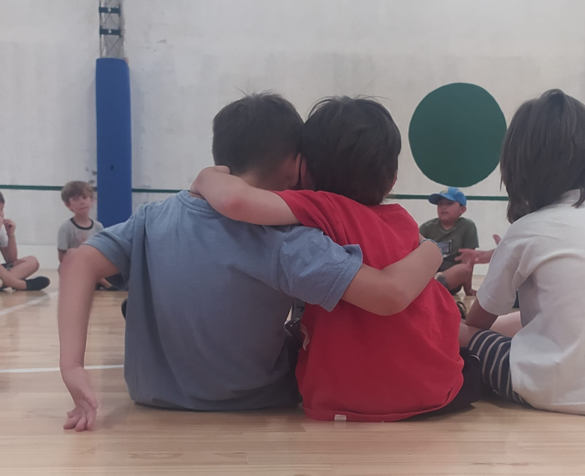

Una nueva forma de Acompañamiento
Descubri una manera de incorporarte a tu entorno de una manera mas funcional. Un Acompañamiento a tu medida
Siempre Sentirse acompañado
El acompañante terapéutico se encarga de alentar la fuerza de voluntad de sus pacientes, y a partir de ahí encontrar una fuente de energía para salir adelante. El acompañante deberá acercarse a su paciente, conocerlo, sentir empatía por él, en definitiva ser capaz de encontrar la mejor manera de motivar para ayudarle.

Acompañamiento durante su aprendizaje.
"Iniciar un acompañamiento es lanzarse a una aventura con otro vulnerado." Kuras-Resnizky, 2005.

Somos quienes adentramos en el lugar del acompañado.
Contáctenos
- Cecilia Sides
- 🏠 Calle 1 1234
- 📧 miemailQgmail.com
- 📞 +5492194619912
- Cecilia Sides
- 🏠 Calle 2 1234
- 📧 miemailQgmail.com
- 📞 +5492194619912